第17天：复写传播
第17天：复写传播
复写传播（Copy Propagation）是编译器优化中的一种重要技术，它通过消除不必要的复写指令（如 x = y）来提升程序性能。
什么是复写指令？请看下面的代码：
1 | |
第 5~7 行，都是复写指令。
经过复写传播数据流分析，会发现上述代码中的复写链： c = b = a = x;
然后把语句中对 c、b、a 的使用替换为对 x 的使用，例如把第 7 行的 “c + 3” 改写为 “x + 3”。
有读者问，改写了又能怎么样？

↑图 1
代码片段 1 生成的中间代码如图1。经过复写传播优化后，中间代码变成下图（图2）的样子：

↑图 2
最大的区别是指令 16，一个是 .t5 = c + 3;一个是 .t5 = x + 3;
后面我们会学习活跃变量分析，复写传播优化后的代码经过活跃变量分析后，会发现图2中指令 3-14 都是多余的，删除多余的指令后，最终生成代码如图 3：

↑图 3
可以看到，确实达到了精简指令的目的。
基本原理
复写传播的数据流分析框架如下：
1、数据流方向：前向，我们需要沿着代码执行的方向分析每一条指令。
2、边界值和初始值：边界集合是空集；初始值集合是所有复写指令的全集。
3、交汇运算：当基本块有多个前驱的时候，基本块的 in 值是多个前驱 out 值的交集。
4、传递函数：s.out = (s.in - s.kill) ∪ s.gen（这里的减号表示差集)
对于 1 和 3，前面的课程已经讲过；
对于 2 和 4，估计读者会困惑；没有关系，马上就讲。
请看下面的例子。
1 | |
我们的编译器针对代码片段 2 生成的中间代码是：
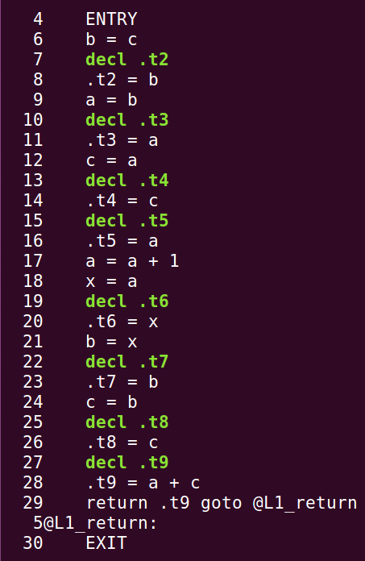
↑图 4
首先要做的，是统计图 4 中的复写表达式。也就是逐条分析中间指令，统计所有的复写指令（使用了赋值运算符，且右值是变量）。比如指令6： b = c; 再比如指令 8：.t2 = b
统计后的结果列举如下：
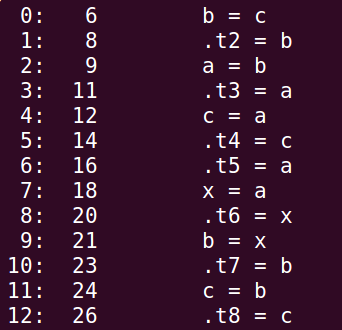
第一列是在统计过程中，我给复写指令的编号，从 0 开始，按顺序递增；
第二列是指令本身的编号，这个大家已经很熟悉了，没有什么特别的用处，仅仅是为了叙述方便。
第三列是具体的复写指令，或者叫复写表达式。
代码片段 2 对应的中间代码一共有 13 个复写表达式，这 13 个复写表达式就构成了全集。
下面我们逐个指令分析，看看集合是怎么变化的。因为 decl 指令不改变集合的值，所以我们直接跳过 decl 指令。
为了图文对比着看，我把图 4 再贴一遍。
↑图 4
初始状态，ENTRY 指令的 out 是空集，它的 out 传递给指令 6，作为指令 6 的 in
根据传递函数 s.out = (s.in - s.kill) ∪ s.gen
指令 6 的 s.in是空集，s.kill也是空集（后面会讲 kill 的意思），
s.gen是指这条指令生成的复写表达式，显然是 b = c；
所以，s.out就是 {b = c}
指令 6 的 s.out 也是下一条指令的 s.in
下一条指令是指令8： .t2 = b;
同理，这条指令生成了复写表达式 .t2 = b；所以 s.gen 是 .t2 = b;
s.in 是 b = c;
s.kill 是空集；
根据 s.out = (s.in - s.kill) ∪ s.gen
所以s.out的值是{b = c ∪ .t2 = b}
再下来是指令 9， a = b;
同理，这条指令生成了复写表达式 a = b; s.kill 依然是空集
所以 s.out 的值是 {b = c ∪ .t2 = b ∪ a = b;}
然后是指令11： .t3 = a; 它执行后，s.out 的值是 {b = c ∪ .t2 = b ∪ a = b ∪ .t3 = a}
下面轮到指令 12， c = a;
因为 c 的值被改写了，所以之前和 c 有关的赋值表达式都失效了（等价关系被破坏），例如指令 6： b = c;
所以这条指令的 s.kill 不为空，凡是和 c 有关的赋值表达式，都会被 kill
s.in - s.kill 的结果是 .t2 = b ∪ a = b ∪ .t3 = a；（从指令 11 的 s.out 中去掉 b = c; ）
又因为 s.gen 是 c = a;
所以 s.out = {.t2 = b ∪ a = b ∪ .t3 = a ∪ c = a}
再看指令 17， a = a + 1;
因为这是加法表达式，不是赋值表达式，所以它的 s.gen 是空集。
但是它的 s.kill 不是空集，所有和 a 有关的赋值表达式，都被 kill 掉。
好了，就不一一分析了，直接看结果。
如图5和图6，每条指令执行后，产生的复写指令用蓝色表示，杀死的复写指令用红色表示：
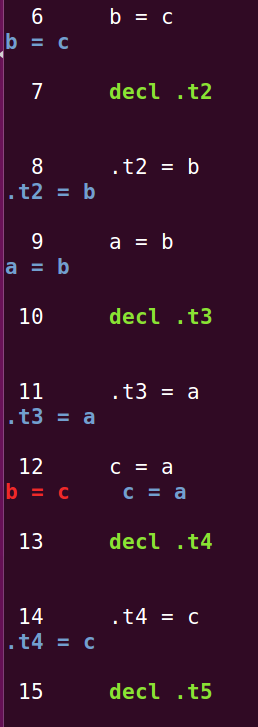
↑图 5
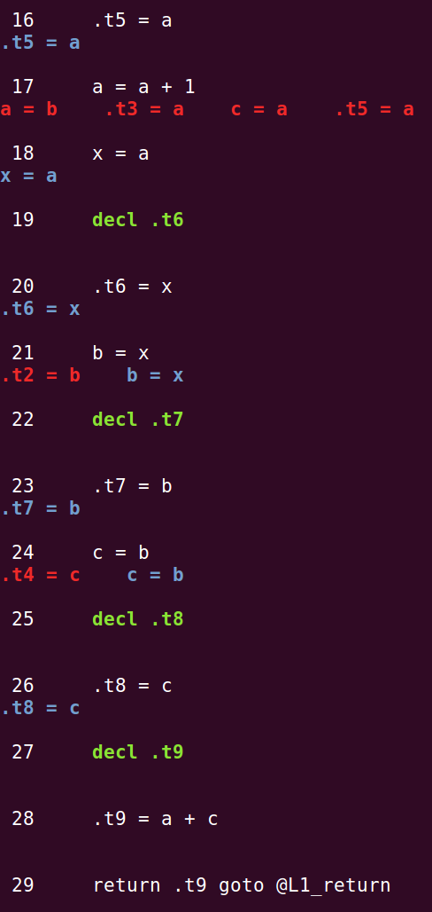
↑图 6
当数据流分析完成后（到达了不动点），每个指令的 in 和 out 值就确定了。
对于复写传播，我们关注到达不动点后，每个指令的 in 集合。
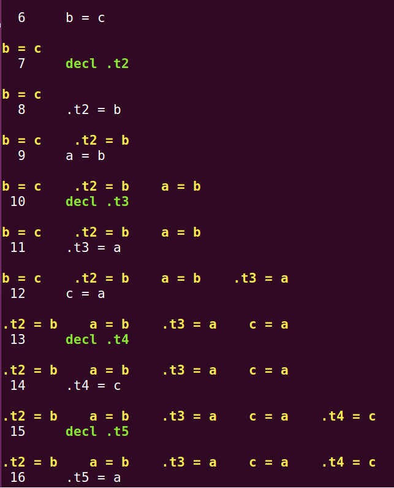
↑图 7
每条指令的 in 集合我都用黄色标注在指令上方了。（图 7仅截取了一部分）
现在看图 8，指令 24： c = b
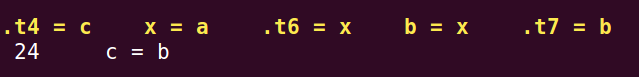
↑图 8
试着找找，看哪个变量可以把 b 替换掉，
根据上方的复写表达式集合，可以找到复写链：b = x = a;
所以 c = b 就可以改写为 c = a;
同理，指令 9: a = b 可以改写为 a = c;
用上面的方法，就可以把一些中间变量替换掉，再配合其他优化手段（例如后面要讲的活跃变量分析），最终达到精简代码的目的。
原理讲完了，下面是代码的讲解。很多细节都在代码中，请读者耐心看。
代码讲解
磨刀不误砍柴工。因为传递函数涉及到集合的差集、并集，所以我们先要造轮子，写代码实现集合的创建（初始化）、求交集、求并集等运算。
代码片段 2 对应的中间代码一共有 13 个复写表达式，它们的编号是 0~12；每个复写表达式都可以用 1 个比特来表示，0 表示没有，1 表示有。所以，用位图就可以表示复写表达式集合。
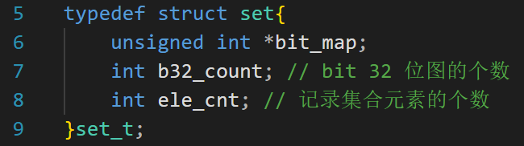
我设计了结构体 set_t，如上图，第一个字段 bit_map 是一个指针，指向位图。
b32_count 表示位图的内存大小（以 4B 为单位）
ele_cnt 表示这个集合能容纳多少个元素。如果是 13 个复写指令，ele_cnt 就是 13；
下面我看和集合有关的代码
set_init
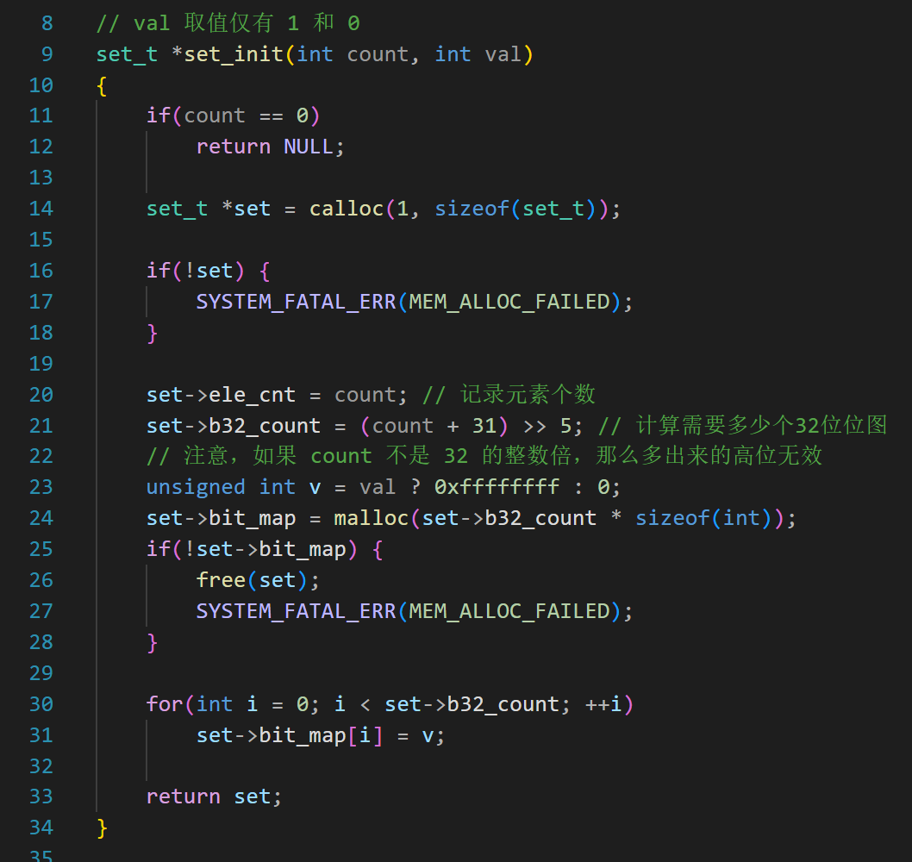
上图就是集合初始化函数。第一个参数是这个集合最多容纳多少个元素，第二个参数是集合的初始化值，其取值只有两种：0 和 1；0 表示空集，1表示全集。
第 14 行为结构体分配内存，第 21 行求得所需的位图个数；注意，集合的元素个数很可能不是 32 的整数倍，多分配出来的比特位没有意义。我们规定，编号为 0 的表达式用最低位的比特表示，也就是 bit_map[0] 的第 0 比特，编号为 1 的表达式用 bit_map[0] 的第 1 比特表示，编号为 12 的表达式用 bit_map[1] 的第 4 比特表示。
第 24 行给位图分配内存；
第 30~31 初始化集合，让位图等于全 0 或者全 1；
交集
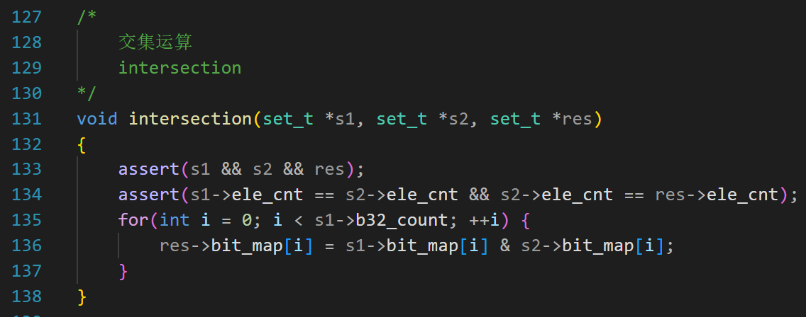
s1 和 s2 分别指向 2 个集合，它们交集的结果在 res 指向的集合中。
需要说明的是，调用者需要准备 res 集合，因为代码里面不会为它分配内存。
第 136 行，用按位与运算实现交集。
并集
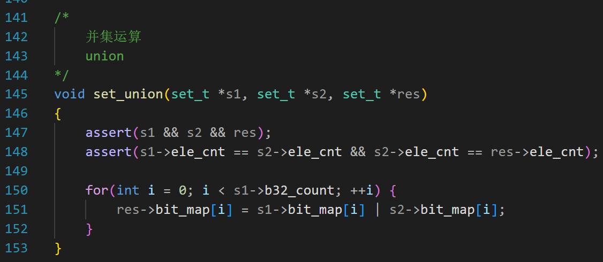
代码和交集类似，只是第 151 行，用按位或实现并集。
差集
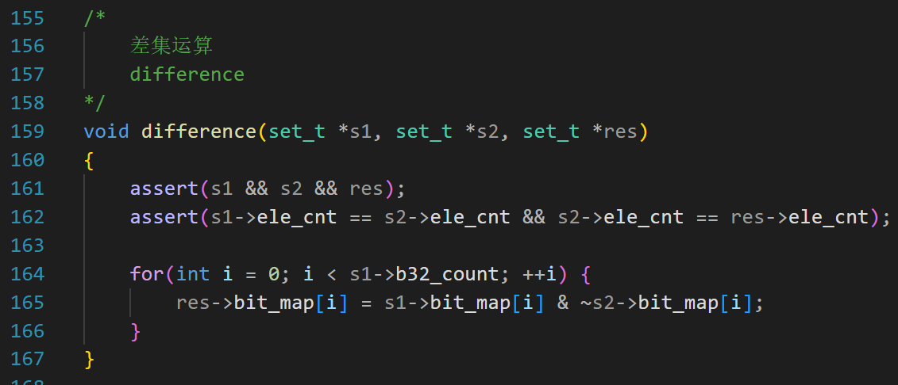
A 和 B 的差集，记作 A - B 或 A \ B，定义为：所有属于集合 A，但不属于集合 B 的元素组成的集合。
用数学符号表示为：
A - B = { x | x ∈ A 且 x ∉ B }
第 165 行，先把 s2 集合的值按位取反，这时候得到的值相当于是 s2 的补集，0 对应的元素恰好是 s2 的元素，再把它和 s1 按位与，以达到从 s1 中排除 s2 的目的。
复制集合
数据流分析的时候，block 的初始值经常是全集或者空集，这时候我们会用到 set_init_copy 函数。
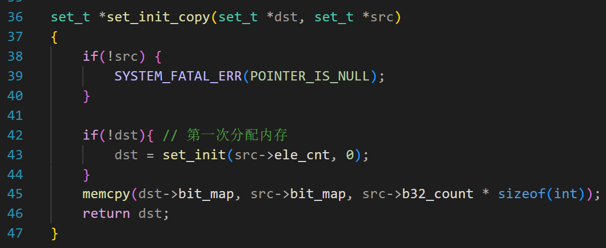
如果第一个参数是 NULL，说明需要分配内存，执行第 43 行，初始化一个空的集合，元素个数来自 src->ele_cnt;
第 45 行，完成集合值的复制。
和集合有关的代码就介绍这么多。
copy_prpgt_info_t
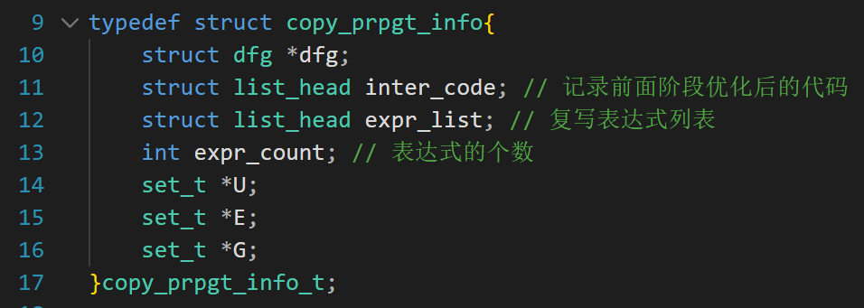
上图就是复写传播的核心结构体。
第 10 行的 dfg 字段是一个指针，指向要优化的函数的流图；
第 11 行的 inter_code 字段是链表的头节点，用来提取上一轮优化后的有效代码，这样做是为了遍历指令的时候方便一些。
第 12 行的 expr_list 字段也是链表的头节点，统计出来的复写指令都会加入这个链表。
第 13 行的 expr_count 是统计出的复写表达式的个数，也是集合为全集时的元素的个数。
第 14 ~ 16 是三个集合，分别是全集、空集和 G，G 这个集合后面会讲。
初始化
下面我们看初始化的代码。
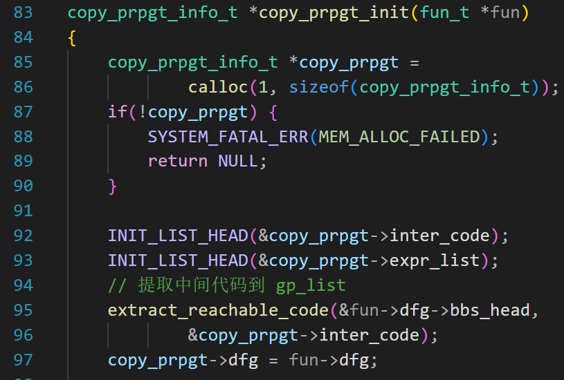
第 85 行，为 copy_prpgt_info_t 类型的指针 copy_prpgt 分配内存。
第 92~93，初始化链表的头节点。
第 95 行，提取优化后的代码到链表。
extract_reachable_code 代码如下图
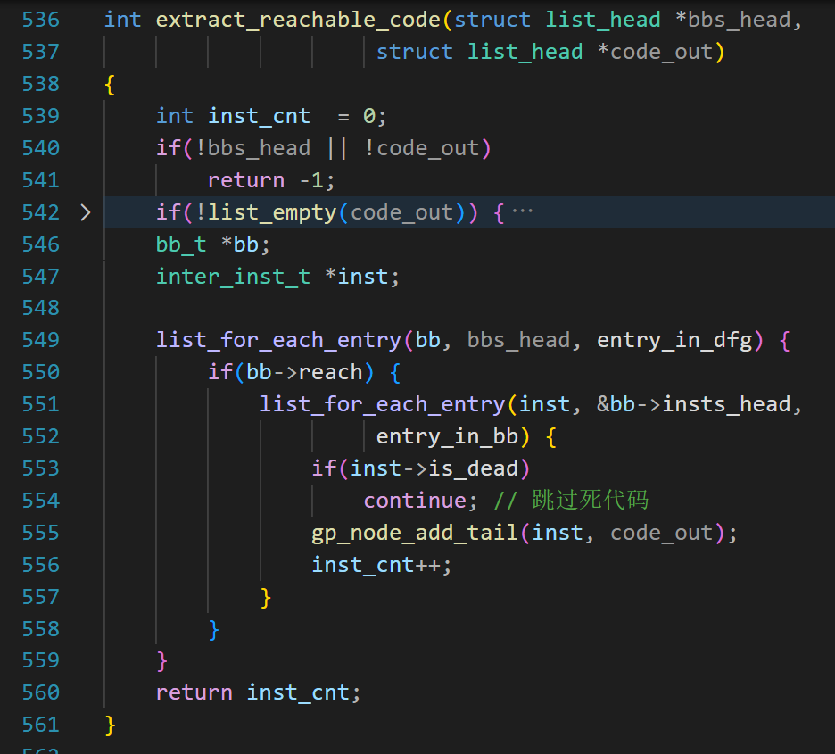
这里面有 2 个地方要注意，第 549 行，遍历流图中的基本块，但是跳过不可达的基本块。因为经过前面的常量传播后，可能有的基本块被标记为不可达了。
第 551 行，针对每个基本块，遍历它的指令，这里面要跳过死代码，死代码的 is_dead 字段为 true；现在还用不上这个字段，但是后面的活跃变量分析就用上了。
常量传播、复写传播、活跃变量分析等优化手段，并没有规定一定是哪个先做哪个后做，需要根据具体场景灵活应变，如果把活跃变量分析放到前面，那 is_dead 字段就用上了，所以我们要跳过死代码。
第 555 行，把指令的地址加入通用链表。
我们继续看代码。
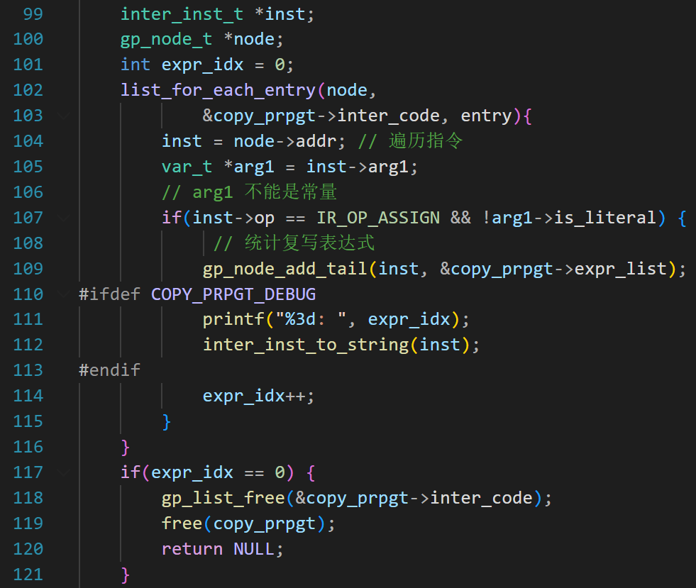
第 101 行， expr_idx 是表达式的编号，也是位图的索引，从 0 开始
第 102 行，遍历 inter_code 链表，分析每一条中间指令，如果是赋值表达式且 arg1 是变量，则加入到 expr_list 链表。
第 110~113 是打印信息，用于调试，看复写表达式和编号的对应关系。
第 117 行处理极端情况，如果代码中没有复写表达式，那也不用复写传播分析了，释放内存，返回。
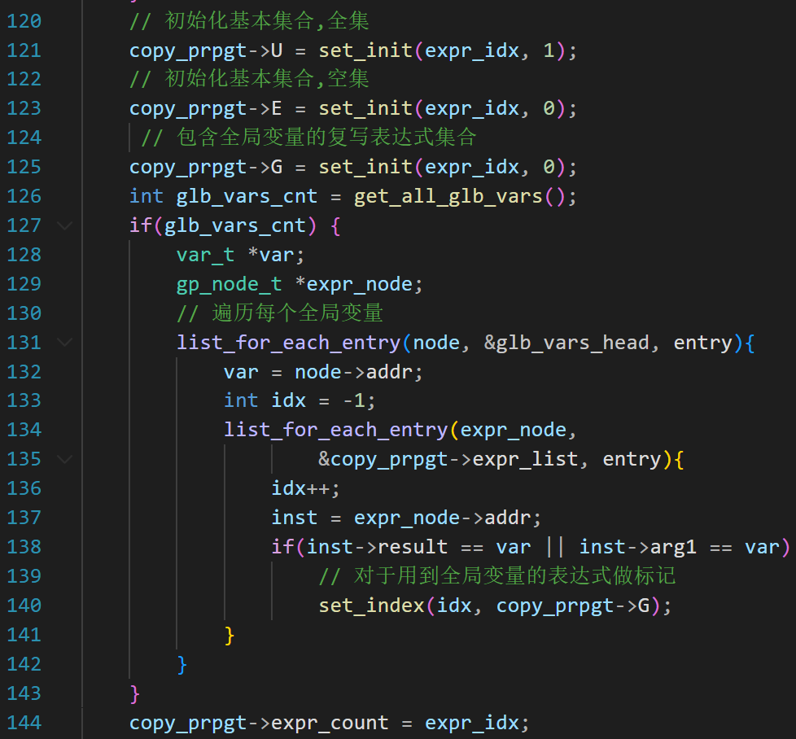
第 121~123，初始化全集、空集。
G 这个集合表示和全局变量有关的复写表达式，先初始化为空。
第 126 行统计全局变量，get_all_glb_vars 这个函数前面讲过，这里不再赘述。
第 131 开始，分析所有的全局变量，从链表 glb_vars_head 中取出全局变量，第 134 行遍历所有的复写表达式，第 138 行，形如 x = y 的赋值表达式，如果 x 是全局变量或者 y 是全局变量，则把集合 G 中对应的元素设置为 1， set_index 这个函数的作用是把集合中某个比特位设为 1；
127~143 的代码执行完，我们就得到了集合 G，它是全集 U 的一个子集，G 的元素是和全局变量有关的复写表达式。有关的意思是复写表达式（形如 x = y ）中，x 或者（和） y 是全局变量。
G 集合怎么用，后文会讲。
第 144 行，记录复写表达式的个数。
为了讲下面的代码，我们先看看 inter_inst_t 结构体。
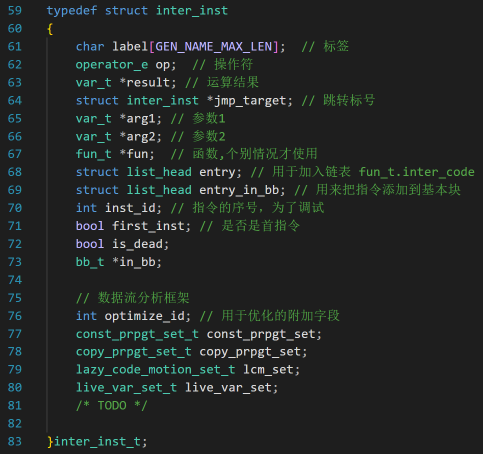
之前用于常量传播的 in_set 和 out_set 字段，我已经把它们封装到了结构体 const_prpgt_set_t 中（第 77 行）；
第 78 行是我们马上要用到的 copy_prpgt_set_t；
第 79 和 80 是后面要学习内容。
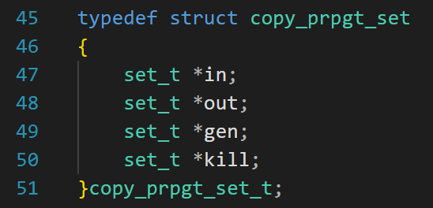
copy_prpgt_set_t 的定义如上图。
前面讲过，数据流分析达到不定点后，我们需要分析指令的 in 和 out 集合，根据某些特征来优化，复写传播也是这样，所以 47~48 少不了。
49 和 50 行是新内容，前文已经介绍了，一个指令可能会生成某个复写指令，也可能会杀死某个（某些）复写指令。
根据传递函数：
s.out = (s.in - s.kill) ∪ s.gen
每个指令的 s.kill 和 s.gen 都要准备好，49 和 50 就是专门干这个的。
我们继续看代码：
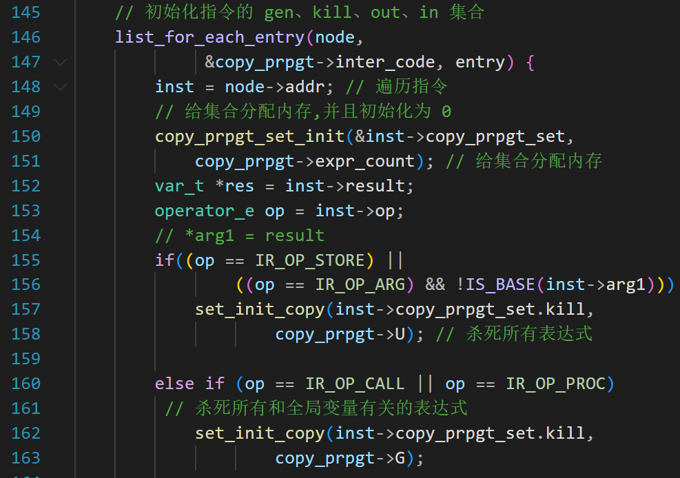
第 146 行，再次遍历中间指令的链表，这次我们要逐条分析指令，设置指令的 4 个集合（in, out, gen, kill）
第 150 行，给 4 个集合分配内存，并先初始化为空集。
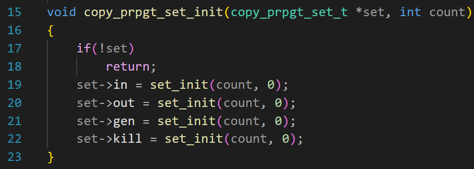
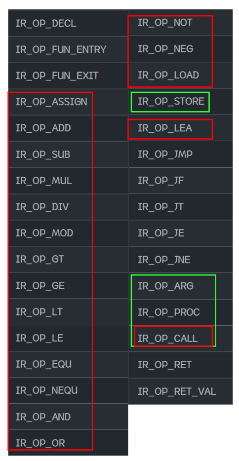
然后根据指令的操作码，做对应的处理。如上图，我们先处理绿色框里面的 4 种指令。
第 155~158，如果是 IR_OP_STORE 运算，形如 *arg1 = result;
或者是指针变量作为参数，则杀死所有表达式，也就是说这个指令的 kill 集合是全集。
为什么呢？形如 *arg1 = result;我们不知道 arg1 指向哪个变量，也就不知道修改了哪个变量；
同理，如果是指针变量作为参数，我们也不知道指针变量指向哪里，会对哪个变量产生影响。保守起见，这条指令杀死所有的复写表达式。
第 160 行，如果是函数调用指令，不好预测这个函数里面是否修改了全局变量，或者修改了哪些全局变量，保守起见，这条指令杀死所有和全局变量有关的复写表达式。这就是 G 集合的用处。
绿色框里面的处理完了，我们处理红色方框里面的指令。
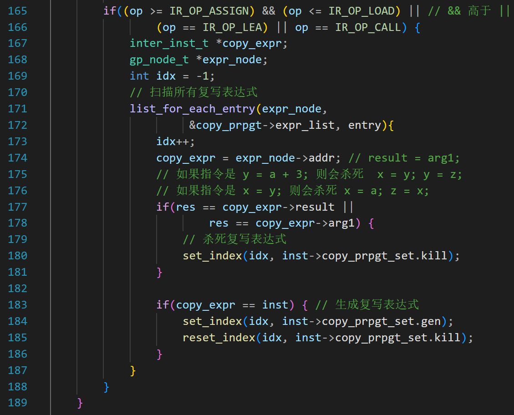
第 171，扫描所有的复写表达式，形如 a = b;
第 177~181 行，如果指令的 res 等于 a 或者 b， 则会杀死 a = b;
特别地，如果指令就是 a = b; 则会杀死和 a 有关的复写表达式（这几行代码有个小问题，后面会说），并生成复写表达式 a = b;（所以有第 184 行）
小问题是如果指令就是 a = b，177~181 也会让它杀死自己。一个指令既生成了自己，又杀死了自己，这在道理上说不通，所以要修正一下 a = b 的 kill 集合，所以有 185 行，把自己排除掉。 reset_index() 这个函数的作用是把集合中的某个比特位清零。
需要说明的是，对于 IR_OP_CALL，虽然前面已经处理了，但是还没有完，形如 a = foo() 这种带有返回值的函数调用会修改变量 a, 这会杀死和 a 有关的复写表达式。所以第 166 行的末尾有 IR_OP_CALL
初始化函数最后的代码是
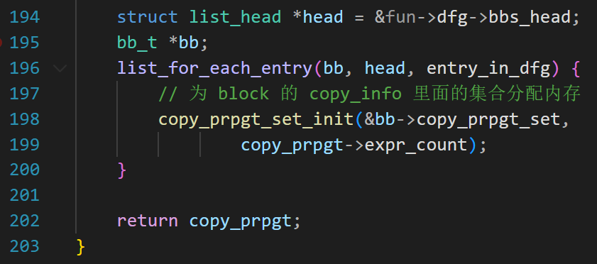
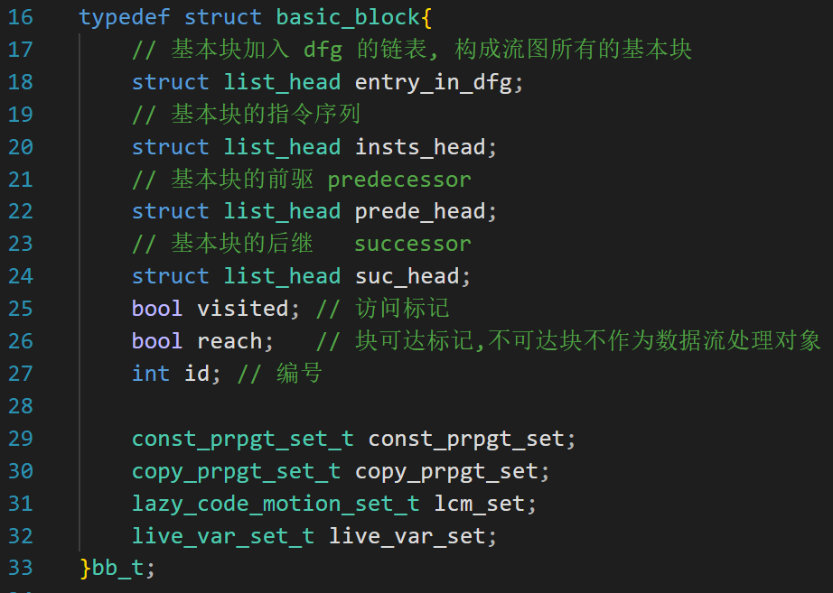
bb_t 这个结构体现在改成了这样。第 29~32 是各种优化手段牵扯到的集合。
因为数据流的交汇运算离不开前驱块的 out 或者后继块的 in，所以 inter_inst_t 结构中的集合在 bb_t 里面也有。
初始化讲完了。下面是数据流分析的代码。
迭代法
先看传统迭代法。
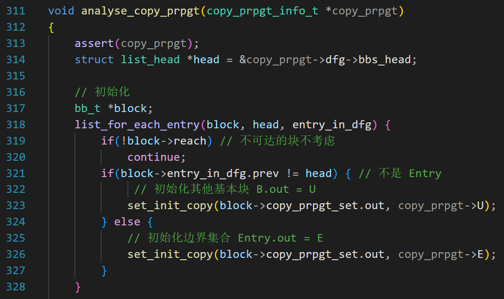
第 318 行开始，初始化每个块，对于 Entry,初始值是空集；对于其他块，初始值是全集。
继续看代码。
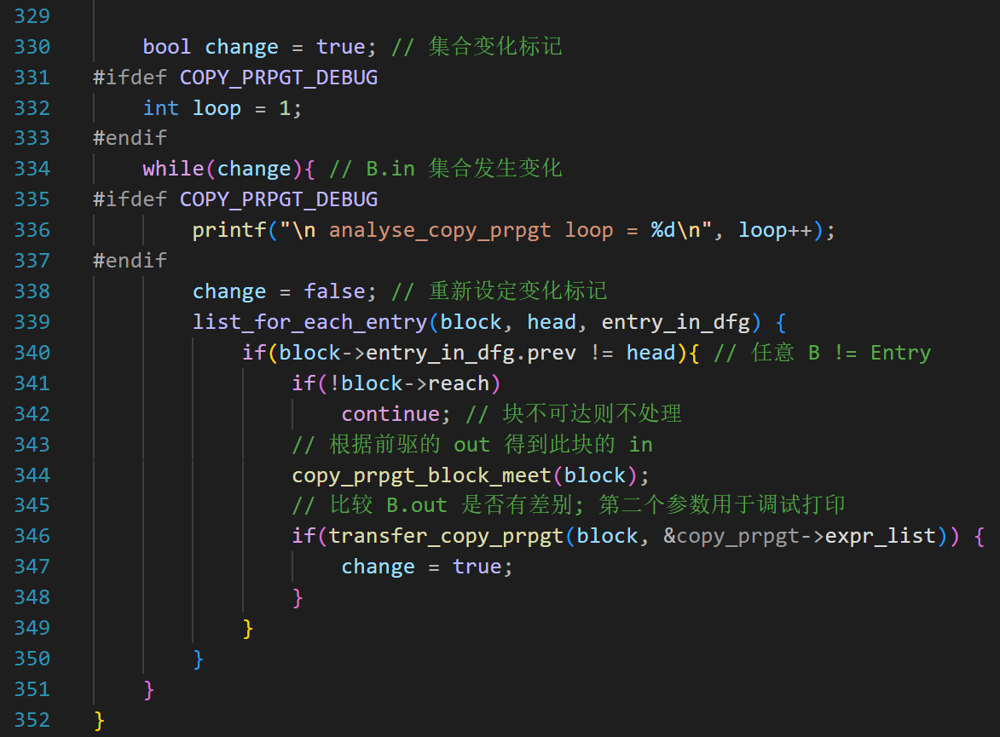
第 339 行，遍历除 entry 外的每个块，第 344 行，先求块的前驱 out 的交集，作为此块的 in，第 346 行，从 in 得到 out。transfer_copy_prpgt 函数的返回值若为真，说明 out 值有变化，继续下一轮的迭代。
其实代码和前面的常量传播类似，都是一个套路。
现在我们看第 344 行的 copy_prpgt_block_meet
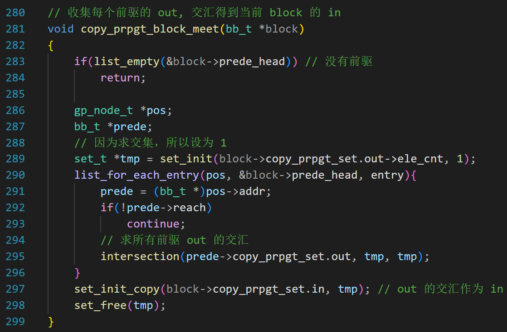
第 283，如果这个块没有前驱，则返回。应该不会执行到这里，因为我们是从 entry 后面的那个基本块开始的，它的前驱是 entry；
之所以这样写是为了增加代码的健壮性。因为有一次，我在遍历的时候忘了排除 entry 块，这个函数对 entry 操作后，直接把 entry 的 in 集合设置为全集了。然后传递函数又把 entry 的 out 设置为全集，引发了一系列错误，很难排查。
第 289 行初始化一个临时的集合，叫 tmp，因为求交集，所以它的初始值设置为全集，这样做的目的是第一次执行完第 295 行的时候，tmp 的值就是第一个前驱的 out 值。
第 290 行，遍历当前 block 的前驱，求它们的交集。
第 297 行，把结果拷贝到 block->copy_prpgt_set.in 中。
in 有了，下面就是利用 transfer_copy_prpgt 函数求 out
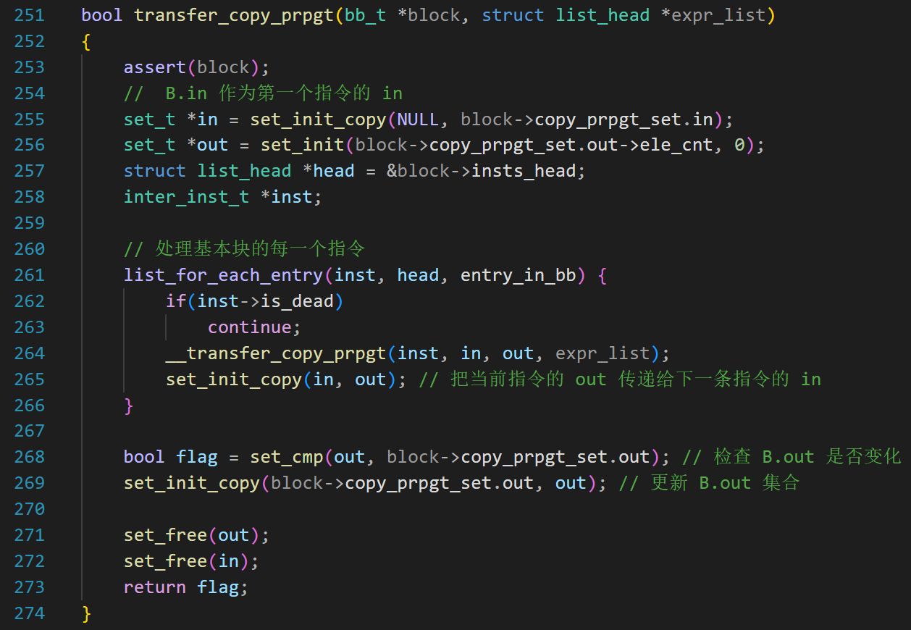
第二个参数 expr_list 是复写表达式链表的头节点，为了调试打印用，可以不关心。
第 255~256，初始化 2 个临时集合，一个叫 in, 一个叫 out
in 的值是从 block->copy_prpgt_set.in 拷贝来的，因为一个块中第一条指令的 in 值等于这个块的 in
第 261 行，遍历这个块内的所有指令，跳过死代码。
第 264 行，__transfer_copy_prpgt 函数的作用是完成指令级别的值传递。
第 265 行，把当前指令的 out 传递给下一条指令的 in
处理完这个块内的所有指令后，最后一条指令的 out 值在临时集合 out 中，这也是这个块的 out 值。
第 268 行，比较这个块当前的 out 值和上一轮迭代时的 out 值，比较结果在 flag 中，这个值很重要，用于判断是否到达不动点。
第 269 行，更新这个块的 out 值。
现在我们看 __transfer_copy_prpgt 函数。
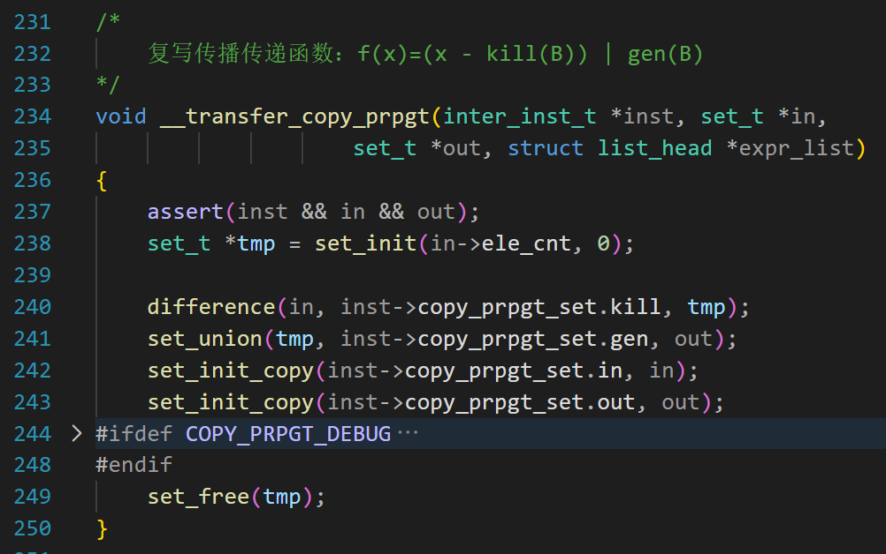
第一个参数是指令的地址，第二个和第三个参数是这条指令的 in 和 out 集合， in 集合的值是传进来的，out 集合用来保存计算结果，第四个参数用于调试打印，不用管。
第 238 行，初始化一个临时集合，叫 tmp
第 240 行，求 in 和 kill 的差集， 结果在 tmp 中
第 241 行，求 tmp 和 gen 的并集，结果在 out 中
第 242~243，设置指令的 in 和 out 值，我们依赖它们做优化。
指令替换
假设已经到达了不动点，下面要做的是指令替换。前文已经说了，对于复写传播，我们关注每个指令的 in 集合。
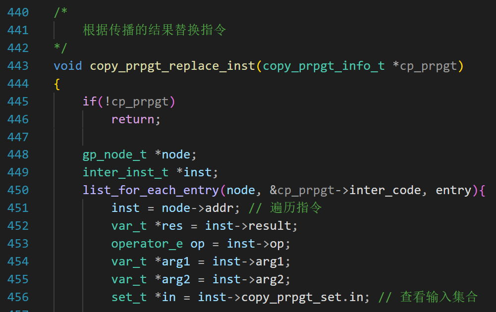
第 450 行，遍历指令；第 456 行，取出该指令的 in 集合。
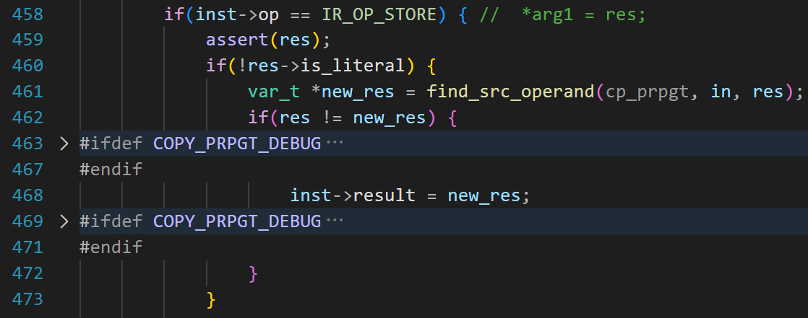
第 458 行，之所以把 IR_OP_STORE 这个操作(下图中绿色的框)单独拿出来，是因为它可能会替换 inst->result，而其他操作替换的是 arg1 或者 arg2
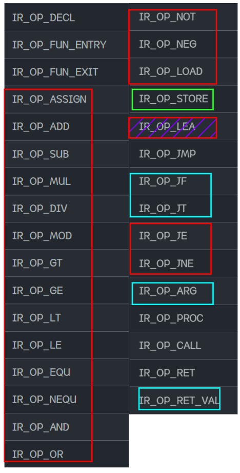
第 460 行判断 res 是否为常量，如果是常量，那就不考虑了，因为复写传播处理的是变量之间的等价关系。
第 461 行，在指令的 in 集合里面查找复写链。
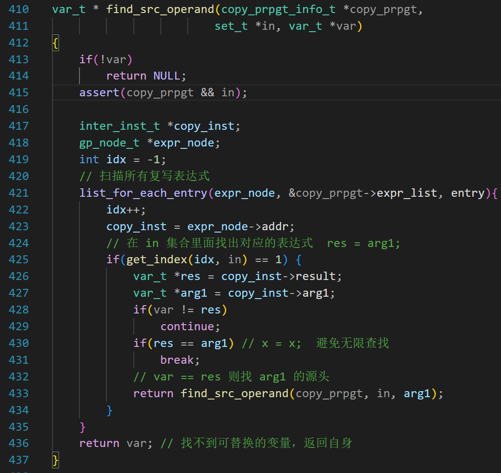
这个函数的作用是查找复写链，看看参数 var 能否被某个变量替换。
第 421 行，扫描所有复写表达式，之所以这样做，是因为集合里面并没有保存具体的复写表达式，而是表达式对应的比特位，我们要从复写表达式链表中提取出 in 集合里面的表达式。
第 425 行，如果对应的比特位是 1，说明集合中有这个表达式；
第 426 行，判断参数 var 是不是这个表达式的左值，如果不是，那就跳过。如果读者不理解，可以举个例子。
还是用前文的例子：
我们关注的是变量 b 能否被替换。当发现指令 c = b 的 in 集合中存在表达式 .t4 = c 的时候，这是没有办法做替换的，因为 .t4 = c 的左值是 .t4
同理， x = a; .t6 = x; 也没有用；直到遍历到 b = x；它的左值是 b, 所以可以把 c = b 的 b 替换成 b = x 的右值 x;有就是说 b 的源头是变量 x;
但是这还不算完，因为 x 也有可能被替换，所以有第 433 行，递归调用本函数，查找 x 的源头。
此时发现 x = a， 就是说 x 的源头是 a, 所以 b 的源头变成了变量 a
有递归，就必须有递归的出口，否则会出现死循环。
递归出口就是遍历了 in 集合中的所有表达式，发现没有任何一个可以替换，这时候返回 var 本身，就是第 436 行。
第 430 行需要解释一下，保不齐代码中有 a = a； 这样的复写表达式，查找 a 的源头，是 a, 再查找 a 的源头，是 a, 哎呀，死循环了！所以要特殊处理，一旦发现，就 break;
有读者会问，会不会构成环，这样也会无限查找下去。
例如， c = b 的 in 集合中有下面 3 个复写表达式：
b = x; x = y; y = b;
（1）b = x; 说明 b 的源头是 x
（2）x = y; 说明 x 的源头是 y
（3）y = b; 说明 y 的源头是 b
继续查找 b 的源头，又回到（1），死循环了。
实际上不可能，为什么呢？
假设集合里面已经有了 y = b 和 x = y， 此时要加入 b = x； 这会杀死 y = b ；所以这 3 个复写表达式不能共存。
再回到代码，我们处理红框标记的操作符。它们都使用了 arg1 和 arg2
之所以没有 IR_OP_LEA 是因为这是取地址运算，不能替换。
例如 a = b; p = &a;
不能因为 a 的源头是 b, 就把 p = &a; 替换成 p = &b;
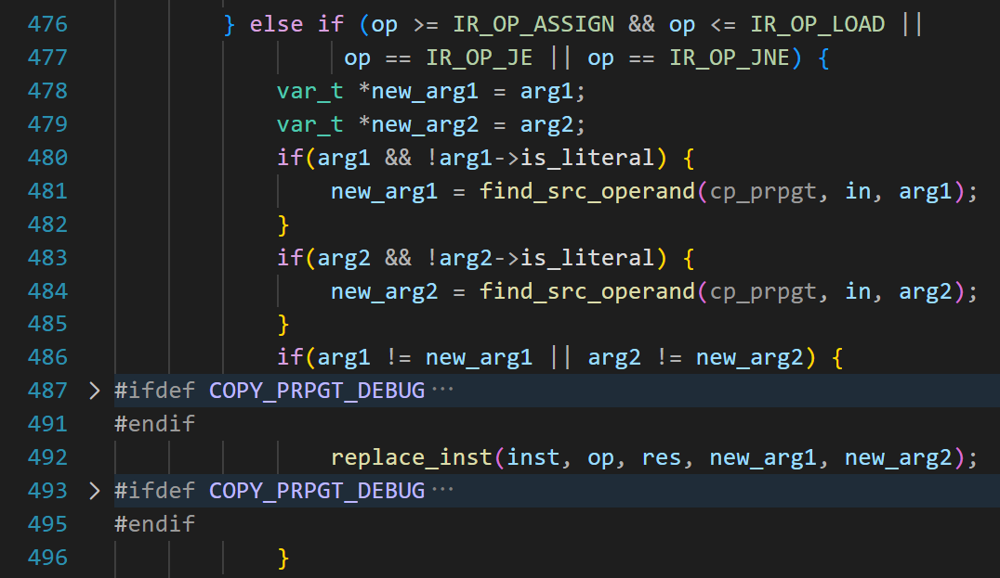
第 481 和第 484，查找 arg1 和 arg2 的源头；
第 486 行，可能找了一圈，没有找到可以替换的，那就不替换了。
如果 arg1 和 arg2 至少一个可以替换，就调用第 492 行的 replace_inst，此函数在讲常量传播的时候已经见过了。
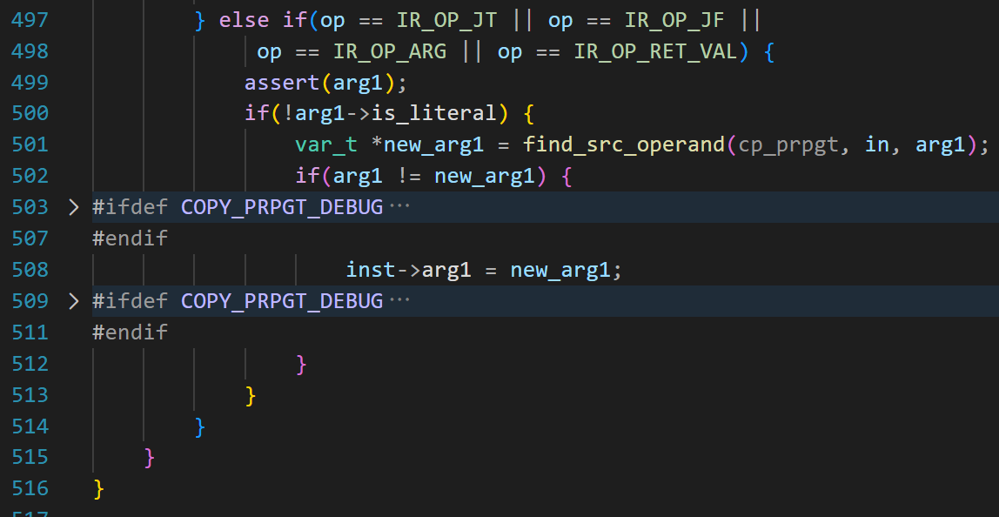
最后，我们处理蓝色框里面的操作，它们仅使用了 arg1;代码如上，很简单，不赘述。
工作表法
在数据流分析的时候，除了传统的迭代法，还可以用效率更高的工作表法。
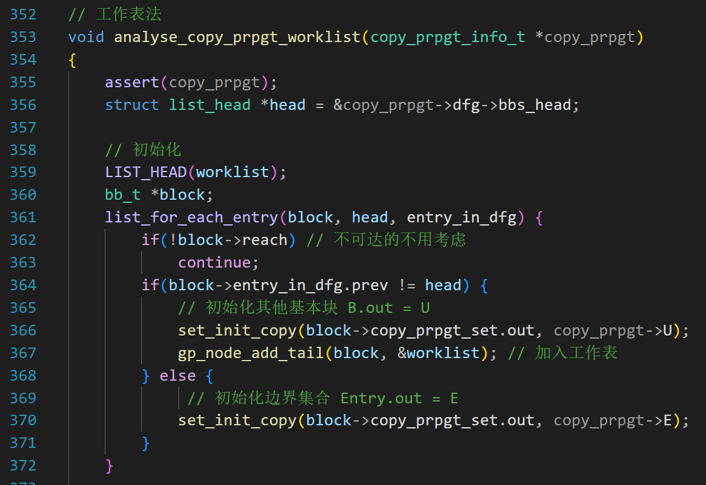
第 359 行，定义一个空的链表，作为工作表。
第 361 开始，做基本块的初始化，和迭代法完全一样。唯一不同的是第 367 行，把所有的基本块加入工作表（Entry 除外），之所以不加 Entry 进去，是因为 Entry 的 out 已经有了，相当于计算过了。
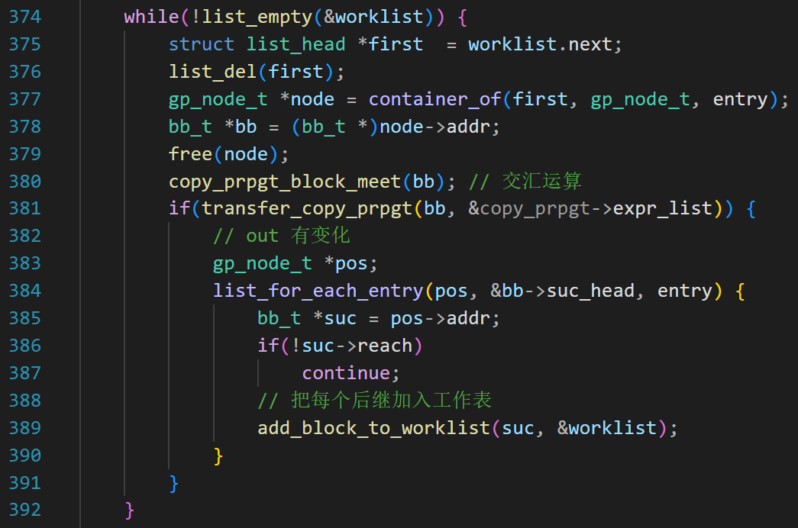
第 374，只要工作表不为空，我们就处理里面的块。
第 375，取出第一个 block
第 380，求这个块的前驱 out 的交集，作为块的 in
第 381，根据块的 in 得出 out；如果 out 有变化，就把它的后继都加入工作表。
最后就是控制程序了。
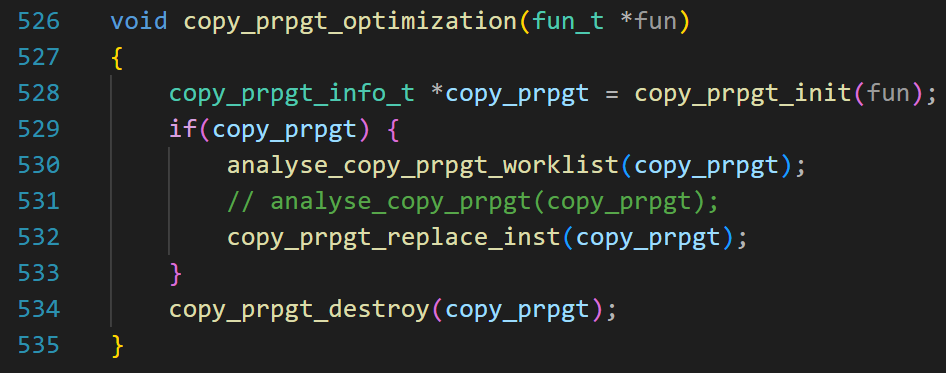
第 528 完成初始化。
第 530 和 531 选一个就可以，前者是工作表法，后者是传统迭代法，目的都是做数据流分析。
第 532，当到达不动点后完成指令替换。
本文的内容就到这里。因为开头已经举例，图 1 和图 2 相当于成果展示，这里就不费笔墨了。
下节课我们学习活跃变量分析和优化。